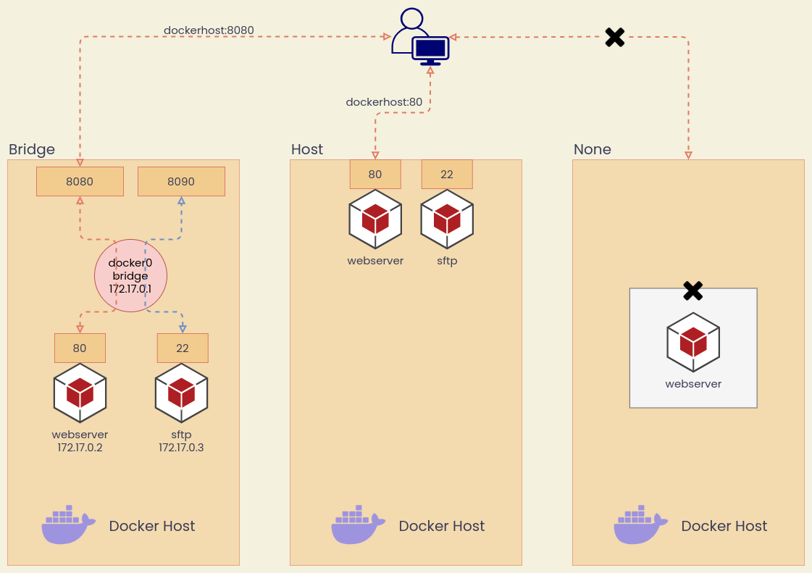
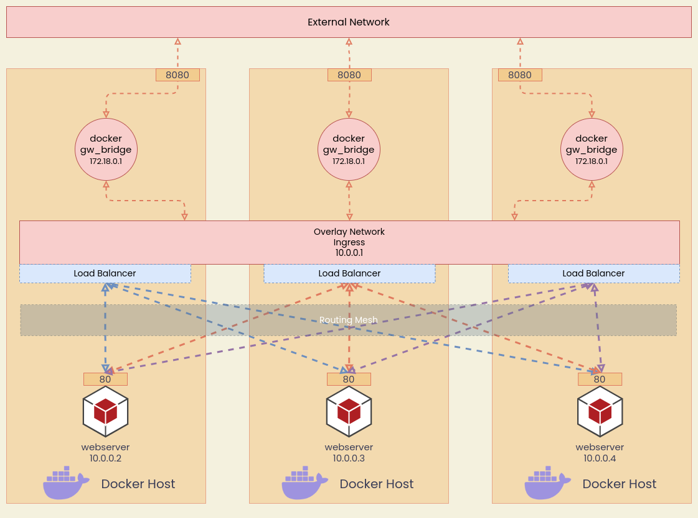

Docker Networks
Basic Networks
หลังจากติดตั้ง Docker บนเครื่องแล้ว จะมี Networks อยู่ 3 แบบ
- Bridge ทำงานเหมือน NAT (Network Address Translation)
- Host ใช้ IP/Port ร่วมกับ Host
- None ไม่เชื่อมต่ออะไรเลย มีแค่ Loopback Address เท่านั้น
นอกจากนี้ Docker (บน Linux เท่านั้น) ยังสนับสนุน Network MACVLAN กับ IPVLAN ในการให้ Container ใช้ IP Address Space เดียวกับ External Network ซึ่งจะไม่อธิบายวิธีการใช้งาน เนื่องจาก Use Case ของเราไม่น่าจะได้ใช้ สำหรับในกรณีที่ใช้งาน Docker Swarm เราจะใช้ Overlay Network ในการคุยข้าม Docker Host

Bridge Networks
จุดสำคัญของ Bridge Networks
- Default Bridge Network Containers สื่อสารกันด้วย IP Address เท่านั้น ไม่สามารถใช้ชื่อ หรือ DNS Resolution ได้
- Default Bridge Network เริ่มต้นที่วง IP 172.17.0.0/16 ซึ่งชนกับ IP Address Space ของ Private Cloud กฟน. จำเป็นต้องแก้ไขหากติดตั้ง Docker บน VM
- User Defined Bridge Network สามารถใช้ DNS Resolution ได้ หมายถึง สามารถใช้ชื่อ Container แทน IP Address ได้
Inspect Bridge Network
Create Bridge Network
Remove Bridge Network
Connect Containers to Bridge
Host Network
Host Network คือ ระบบสื่อสารที่ Container ใช้ IP และ Port ของเครื่อง Docker Host เลย
Connect Containers to Host
วิธีการ Run Container ไม่จำเป็นต้องระบุ --publish หรือ -p เช่น
สามารถเข้าเว็บได้ที่ localhost:80 หรือ ip_address_docker_host:80 ได้เลย
None Network
Container ไม่เชื่อมต่อกับ External Network และ ไม่สามารถคุยกับ Container อื่นได้
Connect Containers to None
Overlay
เป็นระบบสื่อสารที่ Container ใช้คุยกันข้าม Docker Hosts จะใช้ Overlay Network ตอนทำงานกับ Container Orchestration ด้วย Docker Swarm โดยปกติเราจะเลือกใช้ Kubernetes เป็นส่วนใหญ่ แต่ในบางกรณี Docker Swarm มันใช้ง่ายกว่าและติดตั้งภายใต้ Infrastructure ภายในเร็วกว่า
ข้อจำกัดของ Swarm Mode รายละเอียดอ่านที่ Github
- สร้าง Overlay Network โดยใช้ Subnet
/24(Default) หากต้องการ IP Addresses มากกว่า 256 Addresses ให้สร้าง Overlay Network ย่อยๆ แทนการขยาย Subnet
